Flatmap tracing review
Source image, saved anatomical outlines and scale endpoints. Unfinished fields are NA.
fig01A_case15_01 — 15-01
Provisional digitization; inspect anatomical boundaries.
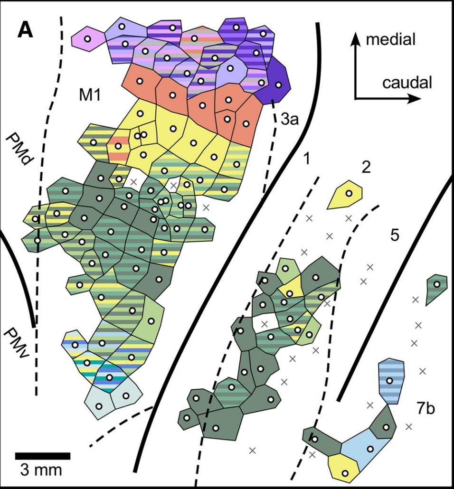

ImageJ ROIs · Calibrated TIFF
| Field | mm² | % neocortex | Status |
|---|
| M1_sampled_response_territory | 125.212 | NA | provisional; anatomical review required |
| whole_M1 | NA | NA | not_measurable |
| PMd; PMv; 3a; 1; 2; 5; 7b | NA | NA | not_measurable |
| individual response categories | NA | NA | not_separately_measured |
fig01B_case15_04 — 15-04
Provisional digitization; inspect anatomical boundaries.
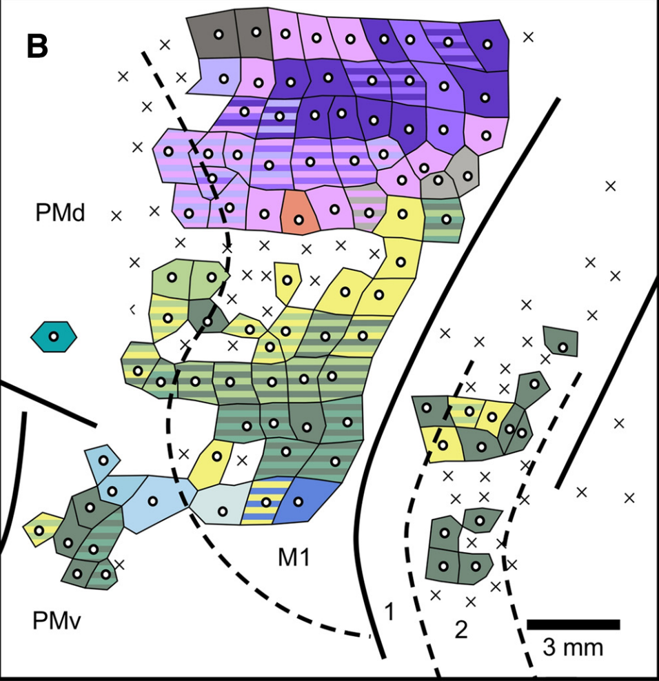

ImageJ ROIs · Calibrated TIFF
| Field | mm² | % neocortex | Status |
|---|
| M1_sampled_response_territory | 90.442 | NA | provisional; anatomical review required |
| whole_M1 | NA | NA | not_measurable |
| PMd; PMv; 3a; 1; 2; 5; 7b | NA | NA | not_measurable |
| individual response categories | NA | NA | not_separately_measured |
fig02A_case15_02 — 15-02
Provisional digitization; inspect anatomical boundaries.
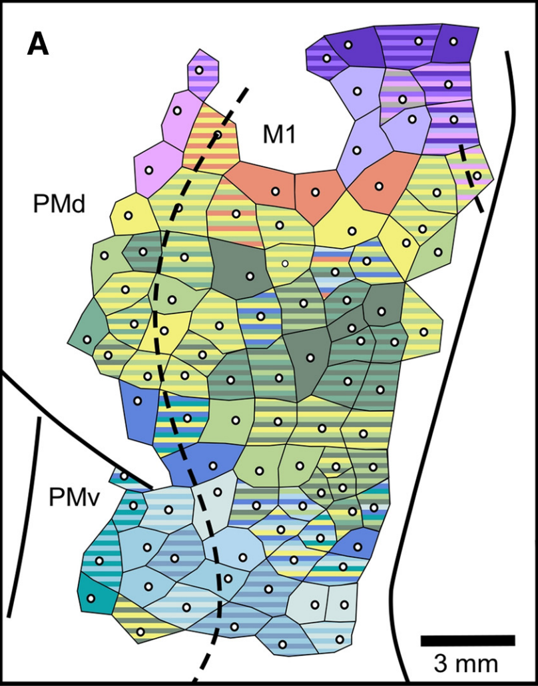

ImageJ ROIs · Calibrated TIFF
| Field | mm² | % neocortex | Status |
|---|
| M1_sampled_response_territory | 117.728 | NA | provisional; anatomical review required |
| whole_M1 | NA | NA | not_measurable |
| PMd; PMv; 3a; 1; 2; 5; 7b | NA | NA | not_measurable |
| individual response categories | NA | NA | not_separately_measured |
fig02B_case15_03 — 15-03
Provisional digitization; inspect anatomical boundaries.
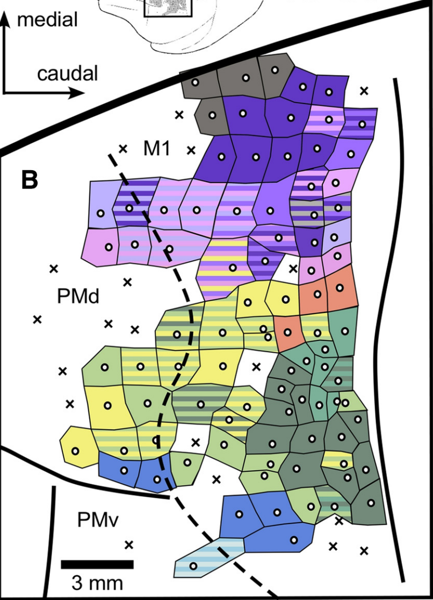

ImageJ ROIs · Calibrated TIFF
| Field | mm² | % neocortex | Status |
|---|
| M1_sampled_response_territory | 132.442 | NA | provisional; anatomical review required |
| whole_M1 | NA | NA | not_measurable |
| PMd; PMv; 3a; 1; 2; 5; 7b | NA | NA | not_measurable |
| individual response categories | NA | NA | not_separately_measured |
fig05A_case15_01 — 15-01
Provisional digitization; inspect anatomical boundaries.
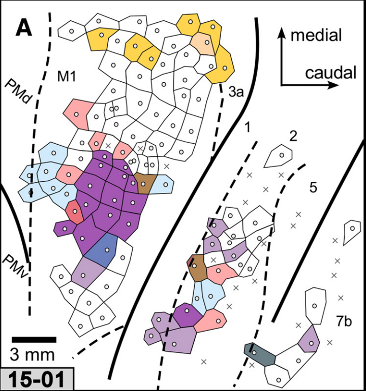

ImageJ ROIs · Calibrated TIFF
| Field | mm² | % neocortex | Status |
|---|
| M1_sampled_digit_and_toe_response_territory | 56.294 | NA | provisional; anatomical review required |
| M1_sampled_opposition_D1 | 20.454 | NA | provisional; anatomical review required |
| M1_sampled_flex_D1_D2 | 2.360 | NA | provisional; anatomical review required |
| M1_sampled_flex_all_digits | 1.038 | NA | provisional; anatomical review required |
| M1_sampled_flex_other_digits | 5.000 | NA | provisional; anatomical review required |
| M1_sampled_extend_other_digits | 7.655 | NA | provisional; anatomical review required |
| M1_sampled_extend_D1_D2 | 2.579 | NA | provisional; anatomical review required |
| M1_sampled_mixed_D1_D2 | 1.149 | NA | provisional; anatomical review required |
| M1_sampled_flex_other_toes | 1.398 | NA | provisional; anatomical review required |
| M1_sampled_flex_T1_T2 | 9.122 | NA | provisional; anatomical review required |
| M1_sampled_digit_response_territory | 40.234 | NA | provisional; anatomical review required |
| whole_M1 | NA | NA | not_measurable |
| PMd; PMv; 3a; 1; 2; 5; 7b | NA | NA | not_measurable |
| M1_sampled_flex_all_toes | NA | NA | not_depicted_in_sample |
| M1_sampled_extend_toes | NA | NA | not_depicted_in_sample |
fig05B_case15_03 — 15-03
Provisional digitization; inspect anatomical boundaries.
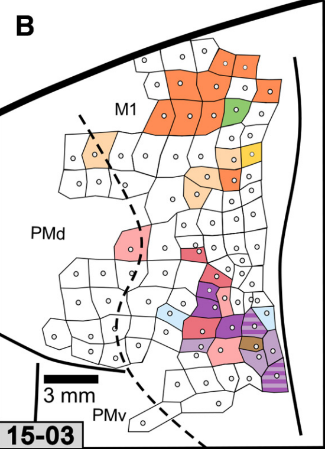

ImageJ ROIs · Calibrated TIFF
| Field | mm² | % neocortex | Status |
|---|
| M1_sampled_digit_and_toe_response_territory | 52.994 | NA | provisional; anatomical review required |
| M1_sampled_opposition_D1 | 5.144 | NA | provisional; anatomical review required |
| M1_sampled_flex_D1_D2 | 4.453 | NA | provisional; anatomical review required |
| M1_sampled_flex_all_digits | 3.834 | NA | provisional; anatomical review required |
| M1_sampled_flex_other_digits | 3.620 | NA | provisional; anatomical review required |
| M1_sampled_extend_other_digits | 2.167 | NA | provisional; anatomical review required |
| M1_sampled_mixed_D1_D2 | 0.777 | NA | provisional; anatomical review required |
| M1_sampled_flex_all_toes | 17.473 | NA | provisional; anatomical review required |
| M1_sampled_flex_other_toes | 5.815 | NA | provisional; anatomical review required |
| M1_sampled_flex_T1_T2 | 1.081 | NA | provisional; anatomical review required |
| M1_sampled_extend_toes | 1.631 | NA | provisional; anatomical review required |
| M1_sampled_digit_response_territory | 20.487 | NA | provisional; anatomical review required |
| whole_M1 | NA | NA | not_measurable |
| PMd; PMv; 3a; 1; 2; 5; 7b | NA | NA | not_measurable |
| M1_sampled_extend_D1_D2 | NA | NA | not_depicted_in_sample |
fig05C_case15_04 — 15-04
Provisional digitization; inspect anatomical boundaries.
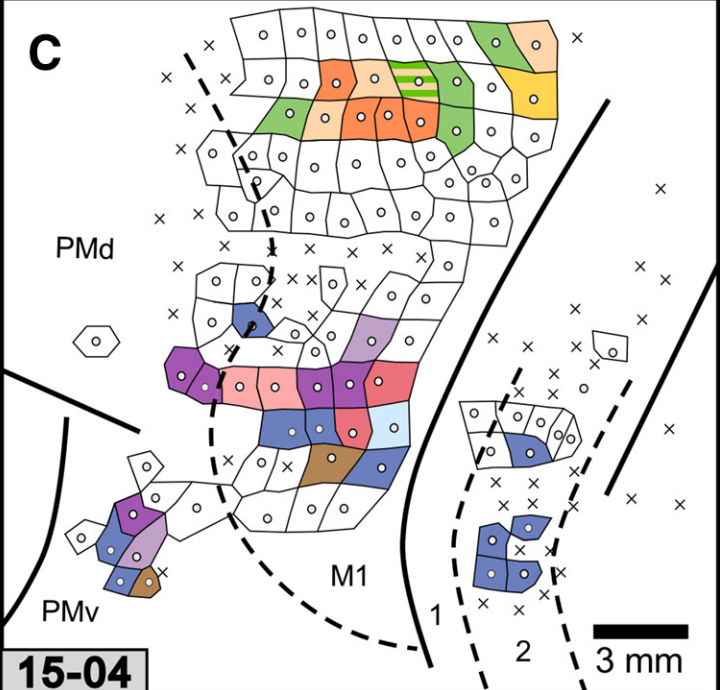

ImageJ ROIs · Calibrated TIFF
| Field | mm² | % neocortex | Status |
|---|
| M1_sampled_digit_and_toe_response_territory | 40.519 | NA | provisional; anatomical review required |
| M1_sampled_opposition_D1 | 2.760 | NA | provisional; anatomical review required |
| M1_sampled_flex_D1_D2 | 1.552 | NA | provisional; anatomical review required |
| M1_sampled_flex_all_digits | 2.954 | NA | provisional; anatomical review required |
| M1_sampled_flex_other_digits | 2.670 | NA | provisional; anatomical review required |
| M1_sampled_extend_other_digits | 1.572 | NA | provisional; anatomical review required |
| M1_sampled_extend_D1_D2 | 4.467 | NA | provisional; anatomical review required |
| M1_sampled_mixed_D1_D2 | 1.785 | NA | provisional; anatomical review required |
| M1_sampled_flex_all_toes | 4.688 | NA | provisional; anatomical review required |
| M1_sampled_flex_other_toes | 4.663 | NA | provisional; anatomical review required |
| M1_sampled_flex_T1_T2 | 2.124 | NA | provisional; anatomical review required |
| M1_sampled_extend_toes | 5.759 | NA | provisional; anatomical review required |
| M1_sampled_digit_response_territory | 17.877 | NA | provisional; anatomical review required |
| whole_M1 | NA | NA | not_measurable |
| PMd; PMv; 3a; 1; 2; 5; 7b | NA | NA | not_measurable |
fig05D_case15_02 — 15-02
Provisional digitization; inspect anatomical boundaries.
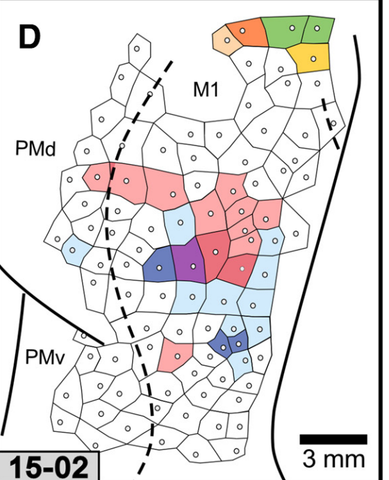

ImageJ ROIs · Calibrated TIFF
| Field | mm² | % neocortex | Status |
|---|
| M1_sampled_digit_and_toe_response_territory | 46.674 | NA | provisional; anatomical review required |
| M1_sampled_opposition_D1 | 2.041 | NA | provisional; anatomical review required |
| M1_sampled_flex_all_digits | 3.581 | NA | provisional; anatomical review required |
| M1_sampled_flex_other_digits | 13.462 | NA | provisional; anatomical review required |
| M1_sampled_extend_other_digits | 12.304 | NA | provisional; anatomical review required |
| M1_sampled_extend_D1_D2 | 2.877 | NA | provisional; anatomical review required |
| M1_sampled_flex_all_toes | 1.422 | NA | provisional; anatomical review required |
| M1_sampled_flex_other_toes | 0.929 | NA | provisional; anatomical review required |
| M1_sampled_flex_T1_T2 | 1.781 | NA | provisional; anatomical review required |
| M1_sampled_extend_toes | 2.953 | NA | provisional; anatomical review required |
| M1_sampled_digit_response_territory | 34.456 | NA | provisional; anatomical review required |
| whole_M1 | NA | NA | not_measurable |
| PMd; PMv; 3a; 1; 2; 5; 7b | NA | NA | not_measurable |
| M1_sampled_flex_D1_D2 | NA | NA | not_depicted_in_sample |
| M1_sampled_mixed_D1_D2 | NA | NA | not_depicted_in_sample |
All-figure source assessment
Eight views represent four identified left-hemisphere cases, identified by the source as Sapajus spp. Figures 1/2 measure the sampled M1 response territory, not complete M1. Figure 5 measures sampled digit/toe territory, a digit union and printed-color components within the source M1 limits. Color components estimate visible color shares: they do not reproduce the authors’ exact half-tile allocation for mixed responses (PDF page 6), and stripe edges are not anatomical field borders. All these observations are partial and excluded from complete-field means. White electrode circles remain tissue; larger no-response/unsampled gaps are retained. The four figure 10 threshold recodings are repeated views of the same maps. No whole-M1 total is inferred.
Source-toggle precision review · Field inventory
Figure 1 — digitized_provisional
2 measured view(s), 2 field/component observations; 0 boundaries remain NA for anatomical review. Illustrative, partial, repeated and unscaled restrictions apply.
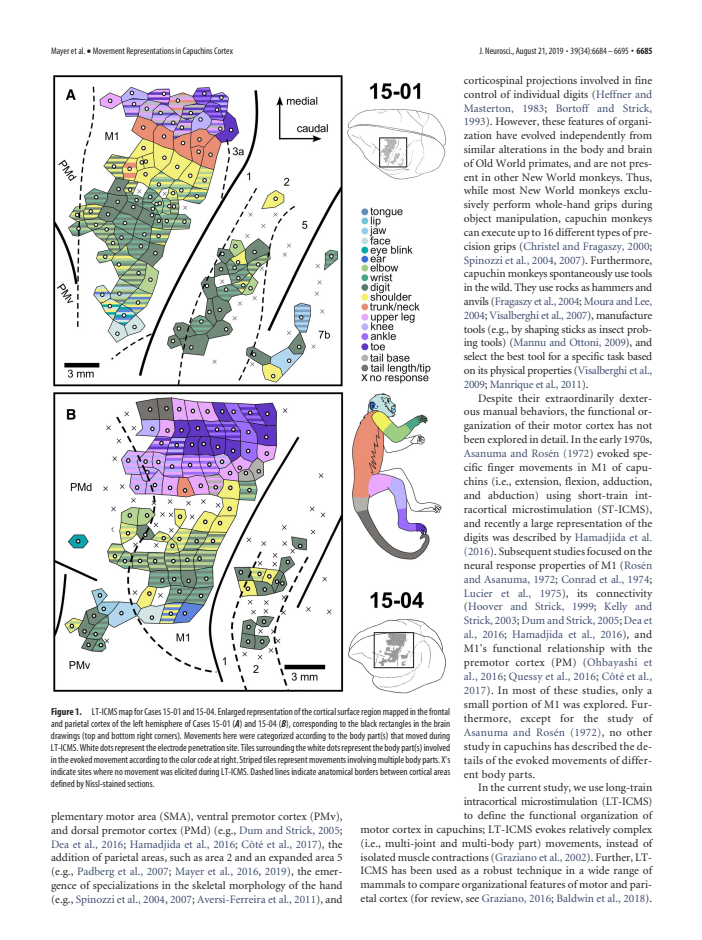
Figure 2 — digitized_provisional
2 measured view(s), 2 field/component observations; 0 boundaries remain NA for anatomical review. Illustrative, partial, repeated and unscaled restrictions apply.
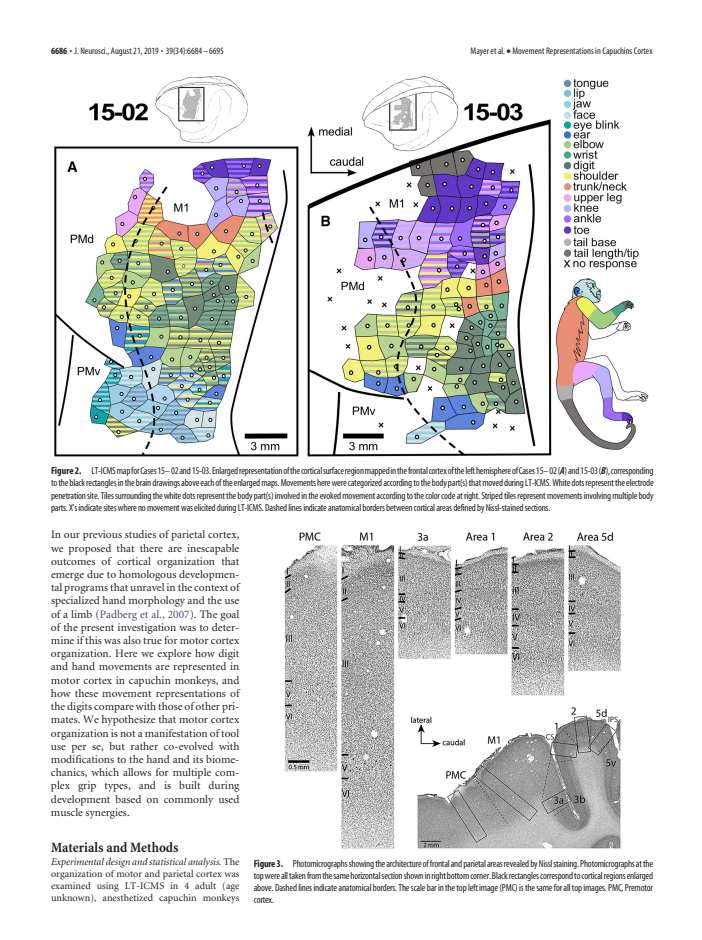
Figure 3 — assessed_excluded
Cross-sectional histology and block face; no tangential whole-field boundary.
Figure 4 — assessed_excluded
Limb movement sketches and body trajectories, not cortex.
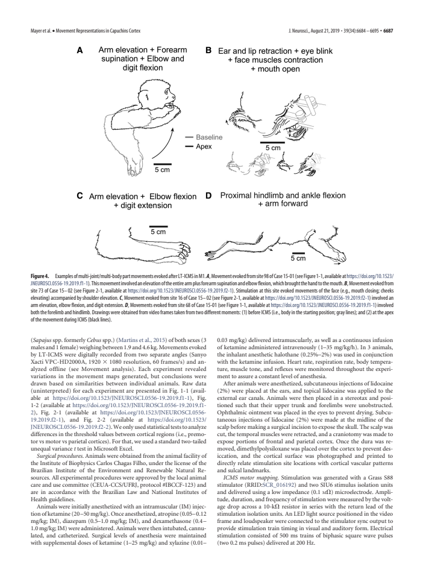
Figure 5 — digitized_provisional
4 measured view(s), 47 field/component observations; 0 boundaries remain NA for anatomical review. Illustrative, partial, repeated and unscaled restrictions apply.
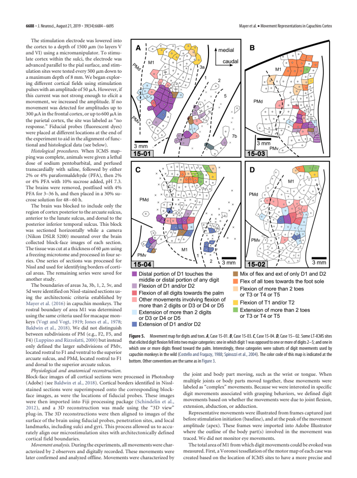
Figure 6 — assessed_excluded
Published area bar chart/pie summaries; no independent tracing geometry.
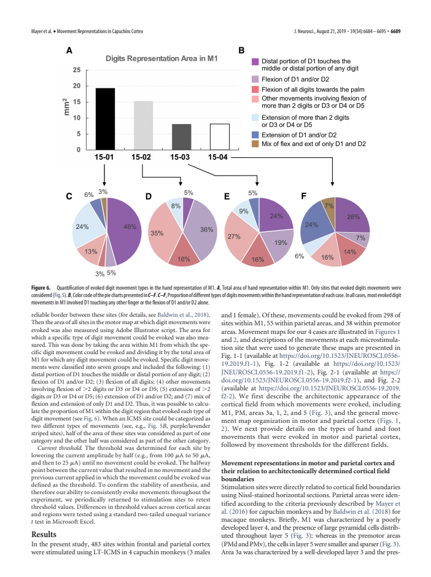
Figure 7 — assessed_excluded
Hand/foot movement photographs, not cortex.
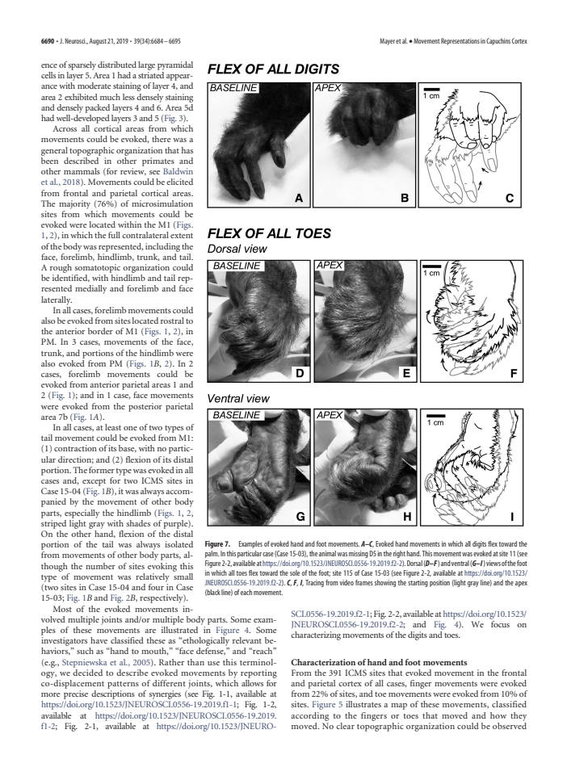
Figure 8 — assessed_excluded
Hand movement photographs and trajectories, not cortex.
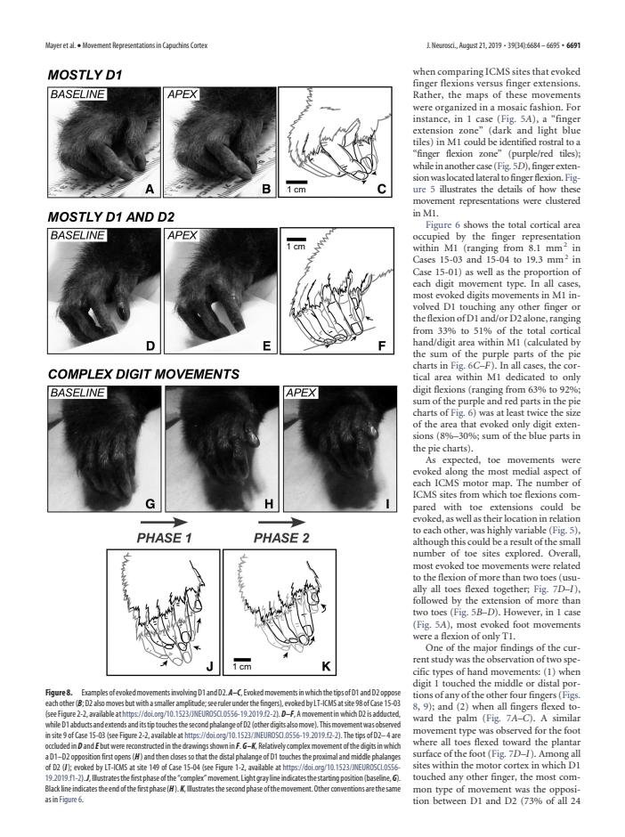
Figure 9 — assessed_excluded
Hand movement photographs and trajectories, not cortex.
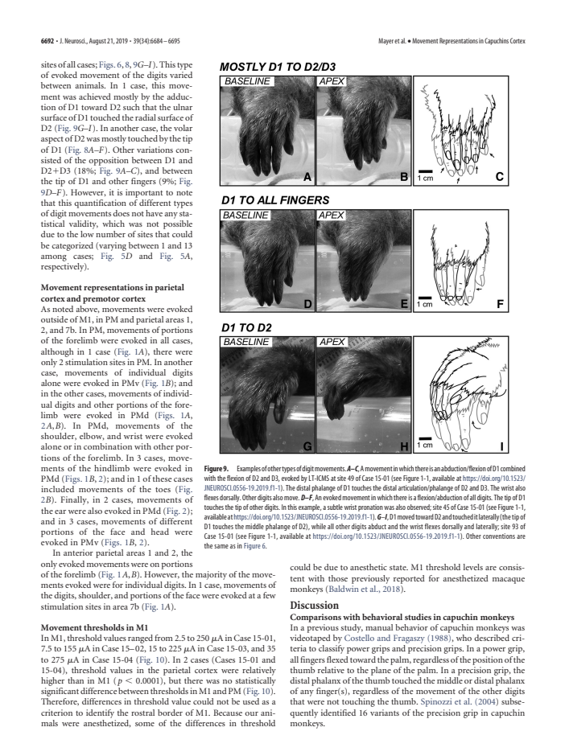
Figure 10 — assessed_repeated_view
Threshold-coded re-display of the same four sampled cortical maps. No additional anatomical field envelope or independent specimen. Response territory is measured from Figures 1/2; category maps from Figure 5. Threshold-specific comparisons are not inferred as whole-M1 area.
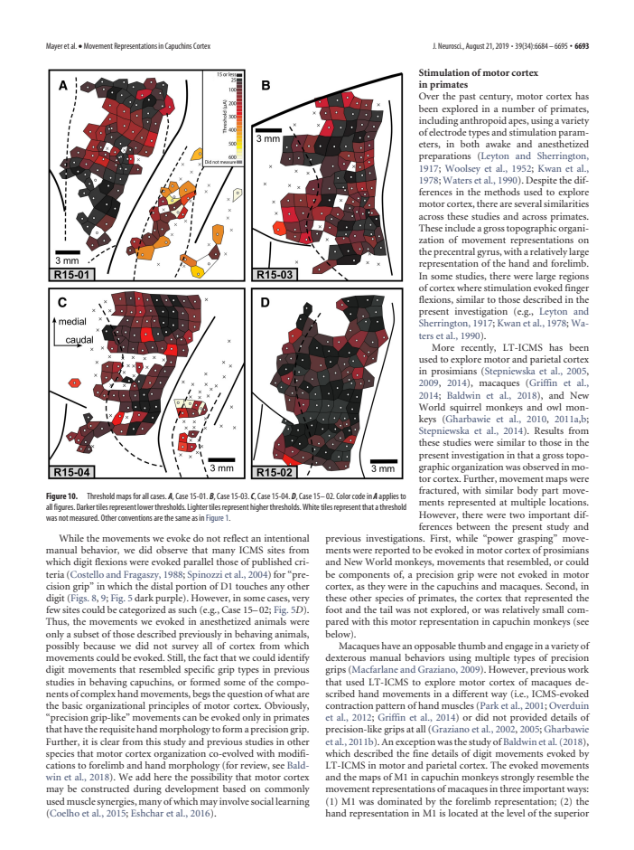